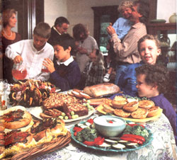
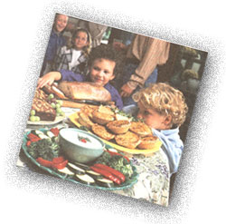

Making Holiday Food
Preparation a Breeze
Regardless of how far you've managed to remove yourself from the din of downtown holidays, guests are sure to find you. Whether they're relatives (stopping by for a few short (but interminable) weeks on their way cross-country, or work associates gathering for their break-your-favorite-dinnerware party, holidays mean extra food. My strategy is to plan low-key get-togethers at my house if it's absolutely necessary or, better yet, to convince nearby relatives that their house would be perfect for entertaining, and I'll bring a hot dish. If I'm bringing food to their place, they'll no doubt expect me to create a natural, low-fat but deliciously elaborate dish. I instead surprise them with something good and so simple that the guests can actually identify it. We've all been to an office party or open house where we spend half the night trying to guess "what those chunky things were," so I spare those closest to me that particular torment.
I try to steer clear of mysteriously gloppy, high-fat party food. Chances are those Cute little appetizers (that take forever to make) are loaded with butter, and the dips are certain to be heavy on the mayo and sour cream. It's no wonder the average American gains from seven to 10 pounds between Thanksgiving and New Year's. Those January-the-first resolutions are easier when you're not looking at a blimp body.
Since we all want to enjoy the festivities and our guests, but with less work, below are a few holiday tips that might help, followed by my favorite high-volume recipes.
Make a list well in advance so you can be on the lookout for sales on items such as holiday paper plates and napkins, nuts, and dried fruits.
Freeze holiday cookies and quick breads ahead for parties or dropin guests. When you're preparing chili, soup, or stew, make an extra container for the freezer, to have on hand for visiting relatives.
Stock up on extra party items, such asbeverages, toasted pita bread, and store- bought hummus, or baked corn chips and salsa. You can make your own five-minute salsa in the food processor just before the guests arrive by using canned tomatoes, cilantro, and hot peppers.
Plan an easy menu. Shop once (with your list) and when ,in doubt, buy a little extra.
Garnish and decorate the food platters. It doesn't have to be fancy, but even a platter of hot dogs looks better with a garnish. You could use parsley, fresh basil, mint, flowers, holiday greenery, pine cones, or red bows. Assign family members to be in charge of different tasks, such as taking coats, serving beverages, coffeemaking, and clean-up.
Plan to prepare a little extra food in case a few relatives bring last minute dates. Find out ire advance who is bringing food and what they're bringing. As for people who don't cook, ask them to bring beverages or paper goods.Make as much of the food as possible the day before the big event to avoid last minute pressure. If possible, cook some dishes a week ahead and freeze.Lay out all the platters, dishes, and utensils (and what you're wearing the night before. Draft some child labor for such jobs as polishing silver and setting the table
Be flexible and relax. '('his is not my strong point, because I want everything to be perfect. Most likely it won't be; as the infamous bumper stickers says (a little more explicitly), "Stuff happens:' Laugh, have a good time, and HappyHolidays.
Artichoke Pie
This simple pie can be made the day before it is to be served and reheated. You can also use the recipe to make several smaller pies, rather than one large one.
1/2 cup finely ground fresh bread crumbs (use a plain bread without seeds)
2 tablespoons olive oil
1 medium onion-halved and thinly sliced
3-4 cloves garlic-minced.
3 eggs-beaten
1/4 cup low fat milk
1 teaspoon dried basil
1 teaspoon dried dill
1/4l teaspoon salt
1/8 teaspoon cayenne pepperfreshly ground pepper
1/4 cup freshly grated romano or parmesan cheese
1 9-12-ounce package frozen artichoke hearts-coarsely chopped (Birdseye has a 9 ounce package)
2 tablespoons curly parsley-minced
Preheat oven to 350°F Generously oil the bottom and half an inch up the side of a 9 - 10 inch quiche or pie pan with olive oil. Pour in the bread crumbs and shake the pan, then pat the crumbs into the oil to make a crust. Saute the onion in olive oil until lightly browned. Add the garlic and saute briefly. Set aside. Beat the eggs in a large bowl and mix in the herbs, salt, pepper, and cheese. Arrange the artichoke and onion mixture on the crust and pour the egg mixture over the top. Bake for 30 to 35 minutes until set and lightly browned. Cool. Cut into thin wedges and serve at room temperature, topped with minced parsley.
Vegetable Wreath Dip
These are the vegetables that I used, but any red and green vegetables would work just as well. The dip can be made a few days ahead.
1 pound broccoli-cut into bite-sizeflowerets
1 small red pepper-sliced into thin strips
1/2 cup low fat cottage cheese cup low fat or nonfat plain yogurt
1 teaspoon dried dill (or about 1 tablespoon chopped fresh dill)
1 large clove garlic peeled and mashed
2 green onions-cut into 1-inch chunks
2 tablespoon chopped fresh parsley
3-4 fresh basil leaves (optional)
Put all the ingredients in a blender. Blend until smooth. Refrigerate in a plastic container until needed. Vegetable assembly: Use a large round platter or plate. Arrange the broccoli in a wreath shape with room for a small dip bowl in the center. Decorate with red pepper strips. (I make a red pepper bow.)
Focaccia
These little pizzas can be prepared a few hours ahead of time and baked just before serving. Choose your own ingredients, but don't pile them on too thick. Fresh herbs add a tangy flavor.
small "Florets" bread (2 8 ounce packages) or any focaccia bread that you prefer
1 tablespoon extra virgin olive oil
4 large garliccloves- minced
1/2 red onion-sliced thin
8-10 mushrooms (try shitake, portobello, or crimini)-sliced thin
8 Italian plum tomatoes (or a28-ouncecan)
freshly ground pepper, cayenne pepper
fresh (or dried herbs)-basil, oregano,thymecup freshly grated pecorino romano orparmesan cheese or you might want to trycrumbled goat cheese or feta (younary omitthe cheese if you prefer
Preheat oven to 450°F. Generously oil a large cookie sheet with olive oil and put the bread on it. In a skillet saute the onion on medium-high heat until it starts to brown, then add garlic and stir until gold en. Stir in the mushrooms for another . minute or so until they start to wilt. Remove from flame. Drain the tomatoes and chop coarsely. Arrange the tom, toes on the focaccia breads and top wit' the onion and mushroom mixture Sprinkle with ground peppers and chopped herbs. (If using fresh herbs, cut with scissors and add after baking.
Using a hard grater, preferably one with slightly larger hole sizes, grate the cheese onto the pizzas. Bake for about 10 minutes, until crispy. Cut into thin wedges and serve. Additional toppings: Diced Calamata (black) olives, diced sun dried tomatoes, cubed feta cheese (instead of the romano), lightly sauteéd spinach or zucchini, roasted red pepper strips, fresh sage or rosemary.
Marinated Vegetables Try marinating different vegetables, such as raw slit zucchini circles or whole small mushrooms. Don'ts marinate them together; make separate batches. They can be left in the marinade in the refrigerator for up to three to four days. Serve the drained vegetables on a lettuce-lined antipasto platter of a few cheeses and meats, artichoke hearts, pepperoncini, olives, roasted red pepper strips, and so on. Let the guests select their choices with toothpicks.
Here's a marinade using cauliflower for the vegetable.
5-6 cups cauliflower (1 head)-cut into bite-size flowerets
4 large cloves garlic-peeled and smashed
1/2 jalapeno pepper-seeded (optional)
1/4 teaspoon salt teaspoon white pepper teaspoon mustard seed
1/2 teaspoon dried oregano
1/4 teaspoon dried basil cup white wine vinegar cup olive oil
Boil enough water to blanch the cauliflower in a large saucepan. Once the water boils, cook the cauliflower for two minutes. Drain into a colander and rinse with cold water. Mix the rest of the ingredients in the saucepan and simmer for five minutes. Pour over the cauliflower and refrig erate overnight in a covered container, occasionally tossing the ingredients.
Honey Pound Cake
This cake can be frozen up to a week in advance. Wrap the cake in plastic wrap and then put in a zip-lock freezer bag. Defrost a few hours before using, slicing it after 30 minutes of defrosting. Serve on a platter decorated with lots of fresh fruit and flowers.
5 tablespoons (1/3 cup) butter, at room temperature
1/4 cup sugar cup honey
3 egg yolks (save the whites)
2 tablespoons lemon juice
1 teaspoon lemon zest (grated lemon peel) I teaspoon orange zest (grated orange peel)
1 1/2 teaspoons vanilla
1/4 cup milk
2 1/4 teaspoon baking soda
2 1/4 cups sifted whole wheat pastry flour
2 1/4 teaspoons baking powder
3 egg whites-beaten until fluffy, not stiff
2 tablespoons sliced almonds (optional)
fresh fruit for decorating (optional)
Preheat oven to 350°F. Grease the bottom of a metal loaf pan with some mild vegetable oil. If you skimp on the oil, this cake has a tendency to stick, so play it safe rather than sorry (don't use a nonstick pan, though). Using an electric mixer, cream the soft butter. Add the sugar and honey and beat again until fluffy. Mix the yolks, lemon juice, peels, and vanilla with the baking soda. Gradually add the flour and baking powder and mix on low until blended.
Wash the beaters well and quickly, then beat the egg whites in a separate bowl. Fold the whites into the batter until just mixed. Pour into the loaf pan and sprinkle the top with the sliced almonds.
Bake for 30 minutes, then lower the oven to 325°F and bake for 15 to 20 minutes longer, or until an inserted toothpick comes out clean. Let the pan cool thoroughly on a rack. Loosen the cake with a spatula before removing from pan.
The cake is a real favorite here, but try to eat only two or three pieces at a time. Happy Holidays!
|
 |
 |
|